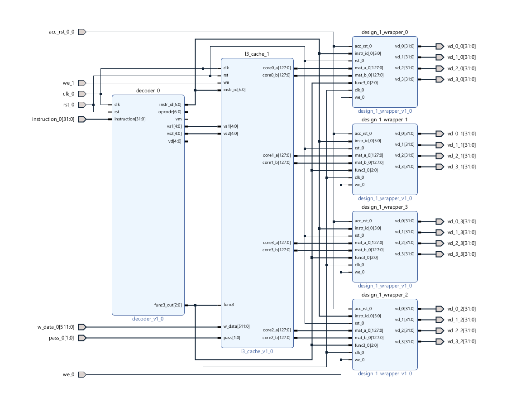
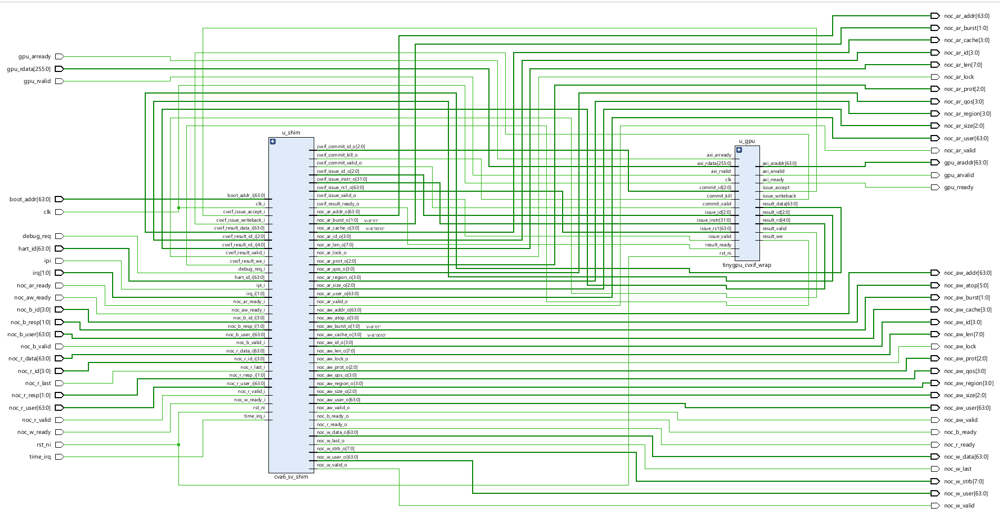
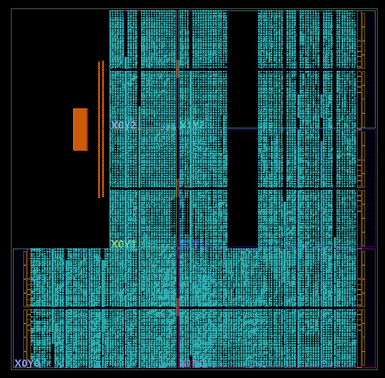

Creating my own GPU
CVA6 integrated GPU that follows RVV ISA.
1. Why do we need co-processors like GPUs?
CPUs (processor) are excellent at doing stuff like Operating Systems, task scheduling, error checking. Newer processors can even do math to a good level.
However they are not nearly as efficient as a GPU (coprocessor) at larger arithmetic operations. And if you don't live under a rock, you know why we need to run mathematical operations on large matrices or vectors - to make LLMs a reality. GPUs are needed for training and inference both. We also find good application in image/video rendering where you need to change the colours really fast or to render thousands of pixels of a certain colour in 3D rendering.
In this blog I'll explain how I made my own GPU, integrated it with an existing RISC-V core (CVA6) and compared the speed up offered.
2. SIMD Architecture
SIMD stands for Single Instruction, Multiple Data. This project is designed keeping in mind a SIMD architecture to be followed. This means that for every piece of data loaded, all elements of the matrix/vector get operated on in the same form as the other, with no exceptions. SIMD and SIMT are the 2 most common GPU architectures used - where SIMT utilises threads that can branch to different operations from each other.
Although SIMT is used in high end GPUs like NVIDIA, I have used SIMD because it is easier to implement and understand.
3. TinyGPU architecture
TinyGPU is a small SIMD vector accelerator, attached to a CVA6 RISC-V core as a custom coprocessor extension over CV-X-IF (the RISC-V Core-Vector eXtension Interface). It performs 4×4 matrix multiply and elementwise-add operations, and runs on real Zynq-7000 FPGA silicon rather than just in simulation. Conceptually it plays the same role for CVA6 that ARA plays for other RISC-V cores - an offload target sitting outside the scalar pipeline that the core hands vector work to.

At the center of the design is a finite state machine that wraps four parallel ALU lanes and manages instruction dispatch, operand fetching, parallel execution across the lanes, and result writeback. Roughly, the modules break down as:
- Control flow -
tinygpu_fsm.v(the orchestration FSM),tinygpu_cvxif_wrap.v/cva6_sv_shim.sv(CV-X-IF glue logic), andtinygpu_decoder(instruction decoding). - Computation -
design_1.v, the SIMD core containing the four ALU lanes (alu.v), plus thedot_reg[]accumulation registers used for matrix multiply. - Storage -
cache.vandregister_file.v, a 4-row/4-column register cache, andaxi4_bram_slave.v, a synthesizable BRAM preloaded via$readmemh. - Memory interface -
writeback.v, the AXI4 write-burst driver that commits results back to memory.
4. Repurposing the RVV instruction encoding
CVA6 issues instructions to TinyGPU using real 64-bit RISC-V Vector Extension (RVV) instruction words - vle64.v, vadd.vv,
vmacc.vv, vse64.v - over CV-X-IF. That interface offloads the instruction rather than executing it on CVA6's own
scalar pipeline.
The catch: TinyGPU's decoder repurposes the real RVV opcode/funct3/funct6 bit patterns to mean matrix and cache-line IDs, not the
per-lane vector-register semantics they'd normally encode. That's a deliberate simplification - it keeps the decoder small - but it also
means the compiler can't auto-vectorize down to these instructions. The four operations have to be emitted as raw .word literals
in hand-written assembly instead of relying on standard RVV assembler directives.
CV-X-IF also enforces a structural dependency between the two cores: its issue_ready = (FSM state == IDLE) backpressure signal
means CVA6 can't issue the next offloaded instruction until TinyGPU's FSM has cycled all the way back to IDLE. The two cores are
tightly coupled by design, not just by convention.
5. Execution pipeline
For a matrix multiply, all four lanes' ALUs run in parallel per pass. An elementwise op (vadd.vv) is just one pass. A
vmacc (multiply-accumulate) instead accumulates each lane's product into a dot-product term across four passes, producing one
row of a real matrix product per instruction. In cycle terms: elementwise addition completes in a single cycle, matrix multiply takes four.
6. Booting without an OS
There's no operating system or bootloader here. The whole system boots straight out of a synthesizable BRAM
(axi4_bram_slave.v, preloaded via boot_image.hex) and runs a fixed instruction sequence: load matrix A, compute
A×A via vmacc, store the result, compute A+A via vadd.vv, store that too, then loop.
That boot image isn't hand-assembled hex - it comes from a real toolchain. fw/boot_matmul.S is compiled with
riscv64-unknown-elf-gcc / riscv-none-elf-gcc, linked with fw/link.ld (which places .text
at 0x8000_0000 and the matrix data at 0x8000_1000), and converted to the BRAM's $readmemh format by
fw/elf2hex.py. fw/build.sh orchestrates the whole thing - CROSS_PREFIX=riscv-none-elf- ./fw/build.sh is
the actual build command. The only manual step is making sure CVA6 lives as a sibling repository (or pointing CVA6_ROOT in
import_sources.tcl at it directly), since the build scripts assume that layout to resolve paths.
7. Testing it before touching hardware
Three simulation testbenches cover different levels of the stack: tb_cva6_boot hand-pokes instructions directly into memory,
tb_boot_image loads the real boot_image.hex through axi4_bram_slave.v via $readmemh (much
closer to how the FPGA actually boots), and tb_bench_image does the same for the benchmark variant. A fourth,
tb_speedup_cycles, is simulation-only and probes internal signals to get a scalar-vs-offload cycle count before ever touching
real hardware.
8. Getting it onto real silicon
The target is a Zynq-7000 (xc7z020clg484, the ZC702 board preset) - an ARM processor subsystem (PS7) sitting next to custom
programmable logic (PL). PS7 is configured with M_AXI_GP0 enabled and a 25 MHz FPGA clock. fpga_top is written
as plain RTL rather than packaged as IP, and GP0 connects directly to axi4_bram_slave's AXI-lite-style read port - no
SmartConnect, no interconnect IP in between.


9. Benchmarking against the scalar core
Benchmarks bracket execution using the RISC-V mcycle CSR (0xB00) and compare two runs of the same A×A
matrix multiply:
- Scalar baseline - a real triple
i/j/kloop computingC = A × Aon CVA6's own RV64IM pipeline, no offload at all. - Offload - the
vle64.v→vmacc→vse64.v→vadd.vv→vse64.vsequence, timed from issuing the firstvle64.vto CV-X-IF's commit of the lastvse64.v.
Measured on the actual Zynq-7000 board at 25 MHz:
Scalar (RV64IM loop): 1561 cycles / 62.44 microseconds
Offload (TinyGPU): 100 cycles / 4.00 microseconds
Speedup: 15.61xThat number isn't simulation-only guesswork - tb_bench_image's simulated result matches the on-hardware measurement
bit-for-cycle, which means the RTL model is a faithful predictor of what actually runs on the FPGA.
10. What it actually computes
For a sample 4×4 input matrix A, TinyGPU produces:
C_mul = A x A (vmacc)
[ 90 100 110 120 ]
[ 202 228 254 280 ]
[ 314 356 398 440 ]
[ 426 484 542 600 ]
C_add = A + A (vadd.vv)
[ 2 4 6 8 ]
[ 10 12 14 16 ]
[ 18 20 22 24 ]
[ 26 28 30 32 ]Full source, testbenches, and build scripts are on GitHub: github.com/athralk/TinyGPU.